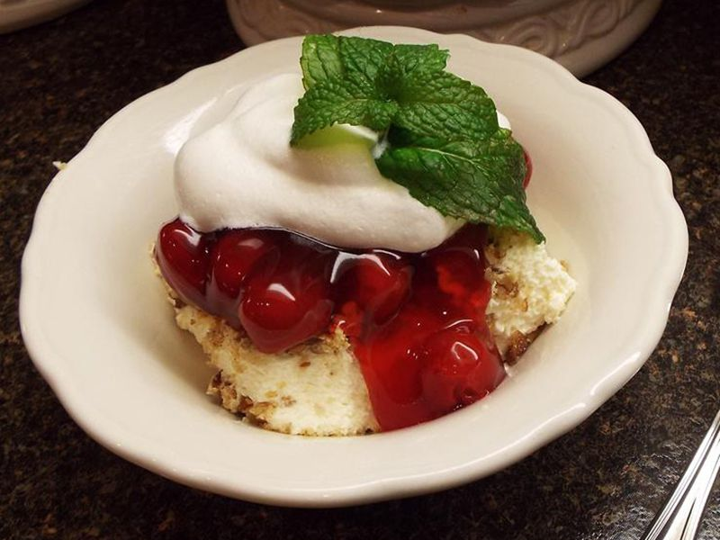

Cheese Cake

This recipe has no added sugar so it is great for Diabetics.It is favorite in our house.
I first tried this recipe as a regular dessert and later tried it without sugar and found it to be just as good.
Ingradients
- 1 3/4 cups graham cracker crumbs
- 1/2 cup butter
- 1/2 teaspoon ground cinnamon
- 1(.6 ounce) package sugar free lemon flavored jell-O
- 1 cup boiling water
- 1(8 ounce) package reduced fat cream cheese
- 2 teaspoon vanilla extract
- 1 cup frozen light whipped topping, thawed
Directions
- Preheat oven to 350 degrees F(175 degrees C).
- In a medium bowl,combine gragam cracker crumbs,butter and cinnamon.
- Mix well and press into the bottom of a 9 inch square pan.
- Bake in preheated oven for 8 to 10 minutes.
- Remove from oven add allow to cool.
- Dissoleve lemon gelatin in boiling water.Let cool until thickened,but not set.
- In a large bowl, beat cream cheese and vanilla until smooth.
- Blend in lemon gelatin. Fold in whipped topping.
- Pour filling into crust .
- Sprinkle top with graham cracker crumbs.
- Refrigerate over night.
Home